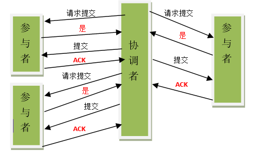
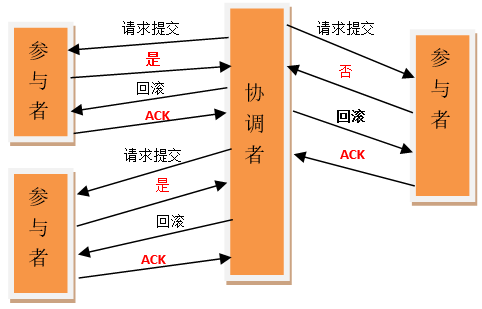
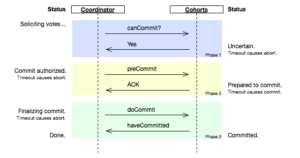
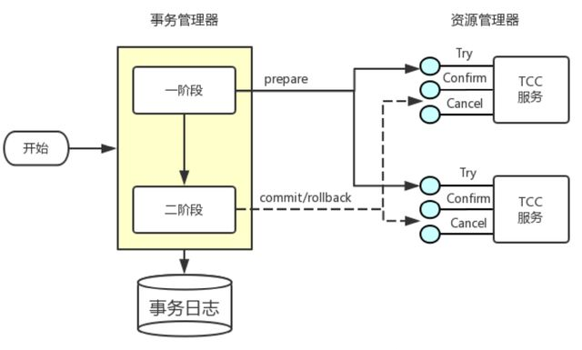

作家萧伯纳说：“人生有两大悲剧，一个是没得到你心爱的东西，另一个是得到了你心爱的东西。”学者周国平则说：“人生有两大快乐，一个是没有得到你心爱的东西，于是你可以去寻求和创造，另一个是得到了你心爱的东西，于是你可以去品味和体验”。
一、基础理论
BASE原则：BASE是Basically Available(基本可用)、Soft state(软状态)和Eventually consistent(最终一致性)的简写。BASE理论是对CAP原则中的一致性和可用性进行一个权衡的结果，它源于对大规模互联网系统分布式实践的总结，是基于CAP定理逐步演化而来的。BASE理论的核心思想就是：我们无法做到强一致，但每个应用都可以根据自身的业务特点，采用适当的方式来使系统达到最终一致性。
基本可用：指分布式系统在出现不可预知故障的时候，允许损失部分可用性。比如：
- 响应时间上的损失：正常情况下，一个在线搜索引擎需要在0.5秒之内返回给用户相应的查询结果，但由于出现故障，查询结果的响应时间增加了1~2秒。
- 系统功能上的损失：正常情况下，在一个电子商务网站上进行购物的时候，消费者几乎能够顺利完成每一笔订单。但是在一些节日大促购物高峰的时候，由于消费者的购物行为激增，为了保护购物系统的稳定性，部分消费者可能会被引导到一个降级页面。
弱状态：指允许系统中的数据存在中间状态，并认为该中间状态的存在不会影响系统的整体可用性，即允许系统在不同节点的数据副本之间进行数据同步的过程存在延时。
最终一致性：强调的是所有的数据副本，在经过一段时间的同步之后，最终都能够达到一个一致的状态。因此，最终一致性的本质是需要系统保证最终数据能够达到一致，而不需要实时保证系统数据的强一致性。
总的来说，BASE理论面向的是大型高可用可扩展的分布式系统，和传统的事务ACID特性是相反的。它完全不同于ACID的强一致性模型，而是通过牺牲强一致性来获得可用性，并允许数据在一段时间内是不一致的，但最终达到一致状态。同时，在实际的分布式场景中，不同业务单元和组件对数据一致性的要求是不同的，因此在具体的分布式系统架构设计过程中，ACID特性和BASE理论往往又会结合在一起
CAP原则：又称CAP定理，指的是在一个分布式系统中，一致性(Consistency)、可用性(Availability)、分区容错性(Partition tolerance)。CAP原则指的是这三个要素最多只能同时实现其中两点，不可能三者兼顾。
- 对于一个将数据副本分布在不同分布式节点上的系统来说，如果对第一个节点的数据进行了更新操作并且更新成功后，却没有是的第二个节点上的数据得到相应的更新。于是在第二个节点上的数据进行读取操作时，获取的依然是旧数据(脏数据)，这就是典型的分布式数据不一致的情况。在分布式系统中，如果能够做到针对一个数据项的更新操作执行成功后，所有的用户都可以读取到更新后的值，那么这样的系统就被认为具有严格的一致性(强一致性)。
- 可用性是指系统提供的服务必须一直处于可用的状态，对于用户的每一个操作请求总是能够在有限的时间内返回结果。其中“有限的时间内”是指对于用户的一个操作请求，系统必须能够在指定的时间内返回对应的处理结果。如果超出这个时间范围，系统则被认为是不可用的。“返回结果”是可用性的一个重要指标，要求系统在完成对用户请求的处理后，返回一个正常的响应结果。正常的响应结果通常能够明确的反应出对请求的处理结果，即成功或失败。
- 分区容错性约束了一个分布式系统需要具有如下特性：分布式系统在遇到任何网络分区故障的时候，仍然需要能够保证对外提供满足一致性的可用性的服务，除非整个网络环境都发生故障。
- 抉择
CAP抉择 说明 放弃P 如果想避免分区容错性问题的发生，一种做法是将所有的数据(与事务相关的)都放在一台机器上。虽然无法100%保证系统不会出错，但不会碰到由分区 带来的负面效果。当然这个选择会严重的影响系统的扩展性。 放弃A 相对于放弃“分区容错性“来说，其反面就是放弃可用性。一旦遇到分区容错故障，那么受到影响的服务需要等待一定的时间，因此在等待期间系统无法对 外提供服务。 放弃C 这里所说的放弃一致性，并不是完全放弃数据一致性，而是放弃数据的强一致性而保留数据的最终一致性。以网络购物为例，对只剩下一件库存的商品，如果同时接受到了两份订单，那么较晚的订单将被告知商品告罄。 由于当前网络硬件肯定会出现延迟、丢包等问题，所以分区容忍性是我们必须需要实现的，所以只能在一致性和可用性之间进行权衡。
二、问题
- 分布式事务：分布式事务是指事务的参与者、支持事务的服务器、资源服务器以及事务管理器分别位于不同的分布式系统的不同节点之上。简单来说就是一个大的操作由两个或者更多的小的操作共同完成，而这些小的操作又分布在不同的网络主机上。这些小的操作要么全部成功执行，要么全部不执行，以保证数据的一致性。
- 基于两阶段提交(2PC)
- 补偿事务(TCC)
- 本地消息表(异步确保)
- 基于RocketMQ事务消息
- Sagas事务模型
- 分布式锁：分布式锁是控制分布式系统之间同步访问共享资源的一种方式。在分布式系统中，常常需要协调他们的动作。如果不同的系统或是同一个系统的不同主机之间共享了一个或一组资源，那么访问这些资源的时候，往往需要互斥来防止彼此干扰来保证一致性，在这种情况下便需要使用到分布式锁。
- 分布式锁可以保证在分布式部署的应用集群中，同一个方法在同一时间只能被一台机器上的一个线程执行，设计时需考虑以下问题：
- 可重入性(避免死锁)
- 阻塞锁(依具体情况做取舍)
- 高可用的获取锁和释放锁(高可用)
- 获取锁和释放锁的性能要好(高并发)
- 分布式锁可以保证在分布式部署的应用集群中，同一个方法在同一时间只能被一台机器上的一个线程执行，设计时需考虑以下问题：
三、分布式事务方案
- 两阶段提交2PC
①第一阶段：准备阶段(投票阶段)
- 协调者节点向所有参与者节点询问是否可以执行提交操作(vote)，并开始等待各参与者节点的响应。
- 参与者节点执行询问发起为止的所有事务操作，并将Undo信息和Redo信息写入日志。
- 各参与者节点响应协调者节点发起的询问。如果参与者节点的事务操作实际执行成功，则它返回一个同意消息；如果参与者节点的事务操作实际执行失败，则它返回一个中止消息。
②第二阶段：提交阶段(执行阶段)
如果协调者收到了参与者的失败消息或者超时，直接给每个参与者发送回滚(Rollback)消息；否则发送提交(Commit)消息。参与者根据协调者的指令执行提交或者回滚操作，释放所有事务处理过程中使用的锁资源(必须在最后阶段释放锁资源)。接下来分两种情况分别讨论提交阶段的过程：
当协调者节点从所有参与者节点获得的相应消息都为
同意时：
- 协调者节点向所有参与者节点发出正式提交(commit)的请求。
- 参与者节点正式完成操作，并释放在整个事务期间内占用的资源。
- 参与者节点向协调者节点发送完成消息。
- 协调者节点受到所有参与者节点反馈的完成消息后，完成事务。
如果任一参与者节点在第一阶段返回的响应消息为
中止，或者协调者节点在第一阶段的询问超时之前无法获取所有参与者节点的响应消息时：
- 协调者节点向所有参与者节点发出回滚操作(rollback)的请求。
- 参与者节点利用之前写入的Undo信息执行回滚，并释放在整个事务期间内占用的资源。
- 参与者节点向协调者节点发送回滚完成消息。
- 协调者节点受到所有参与者节点反馈的回滚完成消息后，取消事务。
不管最后结果如何，第二阶段都会结束当前事务。
存在的问题
- 同步阻塞问题：执行过程中，所有参与节点都是事务阻塞型的。当参与者占有公共资源时，其他第三方节点访问公共资源不得不处于阻塞状态。
- 单点故障：由于协调者的重要性，一旦协调者发生故障，参与者会一直阻塞下去。尤其在第二阶段，协调者发生故障，那么所有的参与者还都处于锁定事务资源的状态中，而无法继续完成事务操作。(如果是协调者挂掉，可以重新选举一个协调者，但是无法解决因为协调者宕机导致的参与者处于阻塞状态的问题)
- 数据不一致：在二阶段提交的阶段二中，当协调者向参与者发送commit请求之后，发生了局部网络异常或者在发送commit请求过程中协调者发生了故障，这回导致只有一部分参与者接受到了commit请求。而在这部分参与者接到commit请求之后就会执行commit操作。但是其他部分未接到commit请求的机器则无法执行事务提交。于是整个分布式系统便出现了数据部一致性的现象。
- 二阶段无法解决的问题：协调者再发出commit消息之后宕机，而唯一接收到这条消息的参与者同时也宕机了。那么即使协调者通过选举协议产生了新的协调者，这条事务的状态也是不确定的，没人知道事务是否被已经提交。
- 三阶段提交3PC
Three-phase commit，也叫三阶段提交协议(Three-phase commit protocol)，是二阶段提交(2PC)的改进版本。它同时在协调者和参与者中都引入超时机制，并且在第一阶段和第二阶段中插入一个准备阶段以保证最后提交阶段之前各参与节点的状态是一致的。

第一阶段：CanCommit，此阶段其实和2PC的准备阶段很像，协调者向参与者发送commit请求，参与者如果可以提交就返回Yes响应，否则返回No响应。
- 事务询问：协调者向参与者发送CanCommit请求，询问是否可以执行事务提交操作，然后开始等待参与者的响应。
- 响应反馈：参与者接到CanCommit请求之后，正常情况下，如果其自身认为可以顺利执行事务，则返回Yes响应，并进入预备状态，否则反馈No
第二阶段：PreCommit，协调者根据参与者的反应情况来决定是否可以记性事务的PreCommit操作。根据响应情况，有以下两种可能：
假如协调者从所有的参与者获得的反馈都是Yes响应，那么就会执行事务的预执行。
- 发送预提交请求：协调者向参与者发送PreCommit请求，并进入Prepared阶段。
- 事务预提交：参与者接收到PreCommit请求后，会执行事务操作，并将undo和redo信息记录到事务日志中。
- 响应反馈：如果参与者成功的执行了事务操作，则返回ACK响应，同时开始等待最终指令。
假如有任何一个参与者向协调者发送了No响应，或者等待超时之后，协调者都没有接到参与者的响应，那么就执行事务的中断。
- 发送中断请求：协调者向所有参与者发送abort请求。
- 中断事务：参与者收到来自协调者的abort请求之后(或超时之后，仍未收到协调者的请求)，执行事务的中断。
第三阶段：DoCommit，该阶段进行真正的事务提交，也可以分为以下两种情况。
执行提交
- 发送提交请求：协调接收到参与者发送的ACK响应，那么他将从预提交状态进入到提交状态。并向所有参与者发送doCommit请求。
- 事务提交：参与者接收到doCommit请求之后，执行正式的事务提交。并在完成事务提交之后释放所有事务资源。
- 响应反馈：事务提交完之后，向协调者发送Ack响应。
- 完成事务：协调者接收到所有参与者的ack响应之后，完成事务。
中断事务：协调者没有接收到参与者发送的ACK响应(可能是接受者发送的不是ACK响应，也可能响应超时)，那么就会执行中断事务。
- 发送中断请求：协调者向所有参与者发送abort请求
- 事务回滚：参与者接收到abort请求之后，利用其在阶段二记录的undo信息来执行事务的回滚操作，并在完成回滚之后释放所有的事务资源。
- 反馈结果：参与者完成事务回滚之后，向协调者发送ACK消息
- 中断事务：协调者接收到参与者反馈的ACK消息之后，执行事务的中断。
在doCommit阶段，如果参与者无法及时接收到来自协调者的doCommit或者rebort请求时，会在等待超时之后，会继续进行事务的提交。(其实这个应该是基于概率来决定的，当进入第三阶段时，说明参与者在第二阶段已经收到了PreCommit请求，那么协调者产生PreCommit请求的前提条件是他在第二阶段开始之前，收到所有参与者的CanCommit响应都是Yes。(一旦参与者收到了PreCommit，意味他知道大家其实都同意修改了)所以，一句话概括就是，当进入第三阶段时，由于网络超时等原因，虽然参与者没有收到commit或者abort响应，但是他有理由相信：成功提交的几率很大。)
2PC与3PC的区别
相对于2PC，3PC主要解决的单点故障问题，并减少阻塞。因为一旦参与者无法及时收到来自协调者的信息之后，他会默认执行commit，而不会一直持有事务资源并处于阻塞状态。但是这种机制也会导致数据一致性问题，由于网络原因，协调者发送的abort响应没有及时被参与者接收到，那么参与者在等待超时之后执行了commit操作，这样就和其他接到abort命令并执行回滚的参与者之间存在数据不一致的情况。
- TCC
TCC，即Try-Confirm-Cancel，是一个类2PC的柔性事务解决方案，由支付宝提出后得到广泛的实践。它又被称为两阶段补偿事务，第一阶段try只是预留资源，第二阶段要明确的告诉服务提供者，这个资源你到底要不要，对应第二阶段的confirm/cancel，用来清除第一阶段的影响，所以叫补偿型事务，其本质上是另辟蹊径达到了和3PC类似的效果。

Try
- 完成所有业务检查
- 预留必须业务资源
Confirm
- 真正执行业务
- 不作任何业务检查
- 只使用Try阶段预留的业务资源
- Confirm操作满足幂等性
Cancel：
- 释放Try阶段预留的业务资源
- Cancel操作满足幂等性
整个 TCC 业务分成两个阶段完成。
- 第一阶段：主业务服务分别调用所有从业务的try操作，并在活动管理器中登记所有从业务服务。当所有从业务服务的try操作都调用成功或者某个从业务服务的try操作失败，进入第二阶段。
- 第二阶段：活动管理器根据第一阶段的执行结果来执行confirm或cancel操作。
四、分布式锁实现方案
基于数据库实现分布式锁
①基于唯一索引特性*
- 创建表
1
2
3
4
5
6
7CREATE TABLE `methodLock`(
`id` int(11) NOT NULL AUTO_INCREMENT COMMENT '主键',
`method_name` varchar(64) NOT NULL DEFAULT '' COMMENT '锁定请求方法名',
`updated` timestamp NOT NULL DEFAULT CURRENT_TIMESTAMP COMMENT '更新时间，默认当前时间戳',
PRIMARY KEY (`id`),
UNIQUE KEY `uniq_method_name`(`method_name`)
) ENGINE=InnoDB DEFAULT CHARSET=utf8 COMMENT='锁定请求方法表';获取锁：请求到达时插入一条记录
insert into methodLock(method_name) values (‘method_name’)，基于唯一索引的特性以达到分布式锁的 效果释放锁：直接删除记录
delete from methodLock where method_name ='method_name'
②基于唯一索引+悲观锁*
- 创建表
1
2
3
4
5
6
7CREATE TABLE `methodLock` (
`id` int(11) NOT NULL AUTO_INCREMENT COMMENT '主键',
`method_name` varchar(64) NOT NULL DEFAULT '' COMMENT '锁定请求方法名',
`updated` timestamp NOT NULL DEFAULT CURRENT_TIMESTAMP COMMENT '更新时间，默认当前时间戳',
PRIMARY KEY (`id`),
UNIQUE KEY `uniq_method_name`(`method_name`)
) ENGINE=InnoDB DEFAULT CHARSET=utf8 COMMENT='锁定请求方法表';- 获取锁
1
2
3
4
5set autocommit = false;
result = select * from methodLock where method_name=xxx for update;
if(result==null){
return true;//get lock
}- 释放锁
commit
③基于乐观锁*
- 创建表
1
2
3
4
5
6
7
8CREATE TABLE `methodLock` (
`id` int(11) NOT NULL AUTO_INCREMENT COMMENT '主键',
`method_name` varchar(64) NOT NULL DEFAULT '' COMMENT '锁定请求方法名',
`version` int(11) NOT NULL COMMENT '版本号',
`updated` timestamp NOT NULL DEFAULT CURRENT_TIMESTAMP COMMENT '更新时间，默认当前时间戳',
PRIMARY KEY (`id`),
UNIQUE KEY `uniq_method_name`(`method_name`)
) ENGINE=InnoDB DEFAULT CHARSET=utf8 COMMENT='锁定请求方法表';- 图示说明
\ 用户A 用户B T1 select field,version from methodLock where xxx，得到version为1 select field,version from methodLock where xxx，得到version为1 T2 update methodLock set filed=newValue1,version=version+1 where xxx and version=1，执行成功，此时version为2 无 T3 无 update methodLock set filed=newValue2,version=version+1 where xxx and version=1，执行失败
基于缓存(如redis)实现分布式锁
- 获取锁：
set key value [expiration EX seconds|PX milliseconds] [NX|XX] - 释放锁：
del key
- 获取锁：
基于Zookeeper实现分布式锁
- 利用Zookeeper创建临时有序节点来实现分布式锁：
- 当一个客户端来请求时，在锁的空间下面创建一个临时有序节点。
- 如果当前节点的序列是这个空间下面最小的，则代表加锁成功，否则加锁失败。加锁失败后设置Watcher，等待前面节点的通知。
- 当前节点监听其前面一个节点，如果前面一个节点删除了就通知当前节点。
- 当解锁时当前节点通知其后继节点，并删除当前节点。
五、扩展
- 微服务
- SaaS：SaaS是Software-as-a-Service(软件即服务)的简称，随着互联网技术的发展和应用软件的成熟， 在21世纪开始兴起的一种完全创新的软件应用模式。它与“on-demand software”(按需软件)，the application service provider(ASP，应用服务提供商)，hosted software(托管软件)所具有相似的含义。它是一种通过Internet提供软件的模式，厂商将应用软件统一部署在自己的服务器上，客户可以根据自己实际需求，通过互联网向厂商定购所需的应用软件服务，按定购的服务多少和时间长短向厂商支付费用，并通过互联网获得厂商提供的服务。用户不用再购买软件，而改用向提供商租用基于Web的软件，来管理企业经营活动，且无需对软件进行维护，服务提供商会全权管理和维护软件，软件厂商在向客户提供互联网应用的同时，也提供软件的离线操作和本地数据存储，让用户随时随地都可以使用其定购的软件和服务。对于许多小型企业来说，SaaS是采用先进技术的最好途径，它消除了企业购买、构建和维护基础设施和应用程序的需要。
- IaaS，PaaS，SaaS 的区别
- SaaS是软件的开发、管理、部署都交给第三方，不需要关心技术问题，可以拿来即用。普通用户接触到的互联网服务，几乎都是 SaaS，下面是一些例子：
- 客户管理服务 Salesforce
- 团队协同服务 Google Apps
- 储存服务 Box
- 储存服务 Dropbox
- 社交服务 Facebook / Twitter / Instagram
- PaaS提供软件部署平台(runtime)，抽象掉了硬件和操作系统细节，可以无缝地扩展(scaling)。开发者只需要关注自己的业务逻辑，不需要关注底层，下面这些都属于 PaaS：
- Heroku
- Google App Engine
- OpenShift
- IaaS是云服务的最底层，主要提供一些基础资源。它与 PaaS 的区别是，用户需要自己控制底层，实现基础设施的使用逻辑，下面这些都属于 IaaS：
- Amazon EC2
- Digital Ocean
- RackSpace Cloud
- SaaS是软件的开发、管理、部署都交给第三方，不需要关心技术问题，可以拿来即用。普通用户接触到的互联网服务，几乎都是 SaaS，下面是一些例子：
- demo
- 我们以前用的OA系统、财务系统、ERP系统，都是安装在我们企业的一个服务器中，数据都是存储在本地的，访问都是通过局域网进行访问(部分可能也会通过互联网)。
- 现在，我们不再系统在本地安装任务软件了，我们只需要打开浏览器，输入网站，然后就可以登录到一个属于我们公司自己的OA系统或ERP系统中了，数据也都是存储在软件服务提供商的服务器中。
- 这样的一个系统，就是一个SaaS系统了，很多人也喜欢在这样的系统上冠名一个云字。
- IaaS，PaaS，SaaS 的区别
- 集群